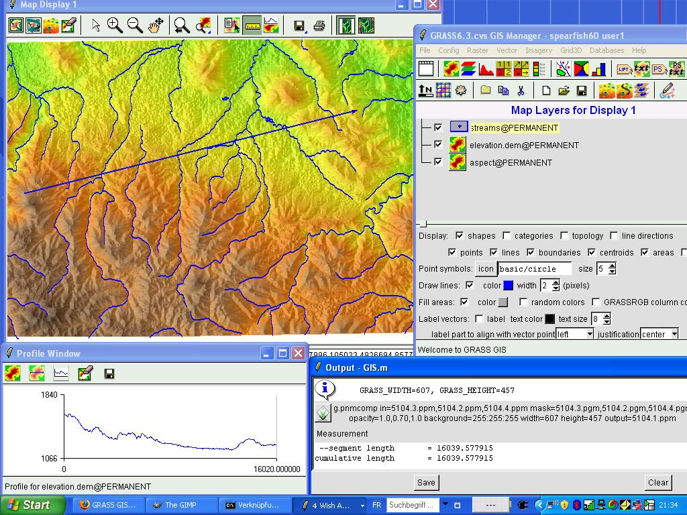

Portable GIS: A Brief Introduction
Steven Feldman / @StevenFeldman, on behalf of Jo Cook / @archaeogeek
Once upon a time... (in 2006)
It was hard to work with open source geospatial tools, you had to use the command line to install and configure, let alone use them
OSGeo4W did not exist
QGIS was 4 years old, but not commonly used
GRASS GIS was the most common open source desktop GIS and it looked like this:
Some packages still had to be compiled from source- on Windows!
and so Portable GIS was born
out of a need to make things easier, for windows users in particular
Born 2006 (ish)
"por.ta.ble": capable of being carried or moved about
"g.i.s": geographical information systems
aka: GIS on a stick
Portable GIS (noun)
What it is:
A self-contained set of the common open source GIS packages, designed to run in windows, from a USB stick
Installed using a single installer file, requiring no additional configuration or setup
Along with some Ordnance Survey Open Data
And a control panel for easy access to all the components
What it is not:
The same as OSGeo4W
The same as OSGeo Live
Compatible with "portableapps.com"
What it is also not:
A Bootable Drive (like OSGeo Live)
Cross-Platform
Small- current installation is a 1.1GB download and 4.6GB installed
also not a stealth system
OK, so what software does it contain?
and what is it for?
rapid-deployment scenarios, education, training workshops, any time you want to take your work home with you...


Where can I get it?
Download the exe file (~1.1GB) from:
portablegis.xyz
Is it Open Source?
Yes!
It has a GLPv3 license, and the source code is hosted at https://gitlab.com/archaeogeek/portable-gis
Contributions are welcome!
Certification as an OSGeo Community Project is in progress
Is there documentation?
Yes!
Documentation is available at http://portable-gis-docs.readthedocs.io/
Contributions are welcome to that too
Future Development Plans
- PostGreSQL 9.x with PostGIS 2.4+
- Keep pace with QGIS LTR
- Updates to Apache, Geoserver, Mapserver
- Re-design control panel (the only part which is freeware)
- Possible alignment with OSGeo Live
If you find it useful, or would like to help with development then...
Great!
\0/
:-)
Let me know, I love to hear about real world uses for it- it makes the effort worthwhile